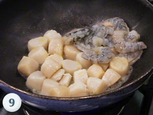
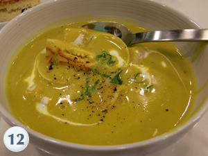

2010
Apr
11
Seafood Pumpkin Bisque
Ingredients
- 12 - 15 pieces of shrimp shells
- 1 onion
- 1 tablespoon of butter
- 170 grams of sherry
- 170 grams of sherry
- 1 thyme
- 1 cup of cream
- 3 pumpkins
- 1 and half cups of chicken/seafood stock
- 12 - 15 pieces of shrimp meat
- 6 scallops
- 18 clams
- 6 pieces of crab legs with shell
- 1 and half tablespoon of olive oil
- Some ginger
- Some clove
- Some nutmeg
- Some cinnamon
- 1 tablespoon of chives
- Some salt
- Some pepper
Preparation
- 
- 
Creamed Spinach
Ingredients
- 1 kilogram of spinach
- 100 grams of butter
- 200 milliliters of cream
- 100 grams of parmesan cheese
- 2 garlics
- Some salt
- Some pepper
Preparation
Roast Chicken with Rosemary Potatoes
Ingredients
- 1 chicken
- 200 grams of butter
- 100 milliliters of olive oil
- 4 garlics
- 1 lemon
- Some salt
- Some pepper
- Some thyme
- Rosemary
- 2 kilograms of potatoes